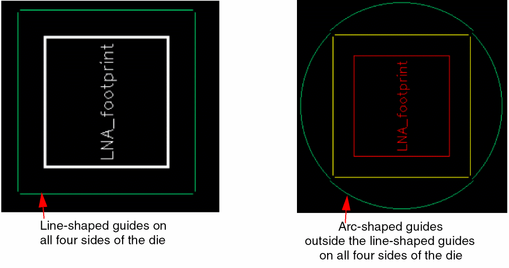
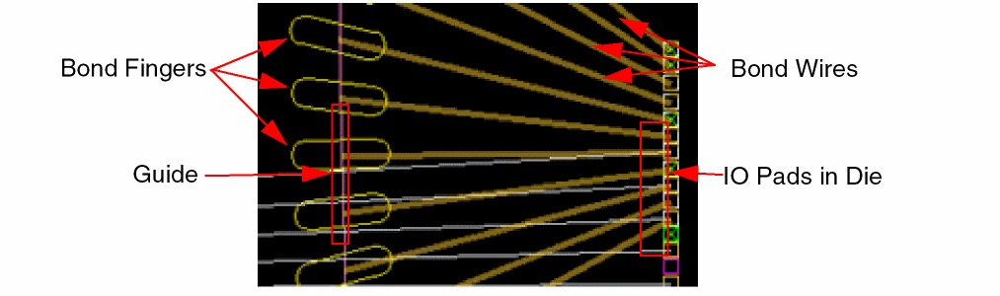
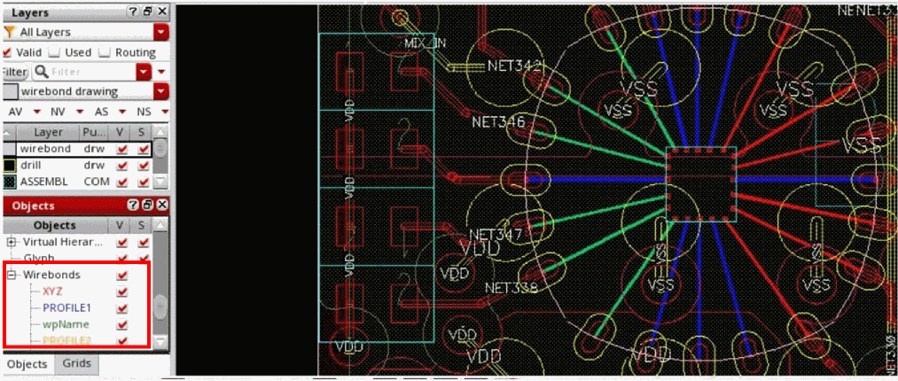

Guides in Wirebonded Dies
You can create one or more line-shaped or arc-shaped guides around dies.

The following diagram shows the connections in a wirebonded die, where the bond fingers are placed on a guide.

You can view wirebonds in the Objects panel of the Palette assistant. You can change the Visibility (V) settings of wirebonds through the Palette. You can also use the environment variable, pteInfraWirebondProfileColors, to assign colors to wirebond profiles.

You can use the SKILL functions, leGetWirebondProfileVisible and leSetWirebondProfileVisible to view or set the visibility of wirebond profiles, respectively.
Related Topics
Return to top